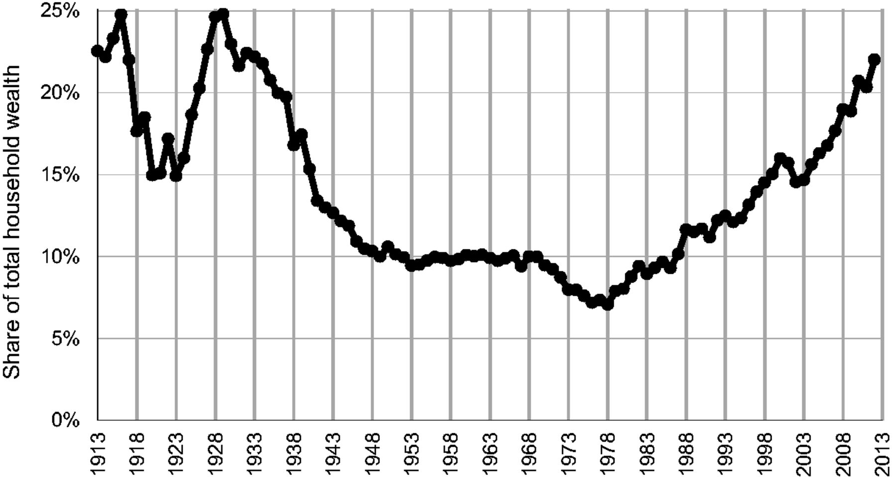

I am, somehow, less interested in the weight and convolutions of Einstein's brain than in the near cerntainty that people of equal talent have lived and died in cotton fields and sweatshops.

From 1981 to 1989 Ronald Reagans administration stressed conservatinve economic values, which included the Largest tax cut in american history as well as increased defense spending as of his soviet strategy.
The tax reforms instituted during his predisency brought top marginal tax rates to their lowest levels since 1931.
Knowing this, refer to the image above. This is a graphed representation of wealth inequality in the United states since 1913, the data used is from Capitalized income Tax data.(add a hyper link to what capitalized income tax data is)
As you can see, even after the 1980s Reagans policies had a lasting effect, increasing inequality across the country by about 10%(being generous)
This is a blatabt example of why "Trickle Down" economics is a bullshit talking point used to make it seem like you're operating with regular peoples best interest in mind.